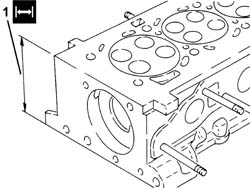
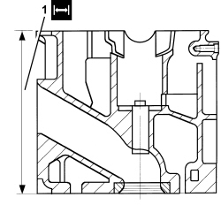

1016E38 SINGLE CYLINDER HEAD OR (ONE) L OR R, REMOVED - GRINDING
- Path
- Procedures > 10 ENGINE > 1016 CYLINDER HEAD/S > 1016E CYLINDER HEAD/S - VARIOUS OPERATIONS > 1016E38 SINGLE CYLINDER HEAD OR (ONE) L OR R, REMOVED - GRINDING
- Kind
- repair procedure (removal / refitting; the operation number is the code)
- Applies to
- all engines; all production periods
- Interactive page
- https://sloeber94.github.io/elrnDB-fCrm/en/#/194002130
Applies to: engines: 1.8, 2.2; all production periods
The cylinder head on this engine cannot be refaced.
The cylinder head should be replaced if the planarity value is not within the recommended limits.
Measurement | Value | Validity | ||
|---|---|---|---|---|
Cylinder head lower surface flatness (mm) | 0.05 | 1.8 2.2 16V | ||
Applies to: engines: 1.9 JTD 16v; all production periods
Check that the flatness of the lower cylinder head plane corresponds to the recommended values.
Measurement | Value | Validity | ||
|---|---|---|---|---|
Cylinder head lower surface flatness (mm) | 0.1 ± 0.05 | 1.9 JTD 16V | ||
1. If the planarity of the lower cylinder head plane does not correspond to the recommended figures, regrind it without exceeding the minimum permitted height.
Measurement | Value | Validity | ||
|---|---|---|---|---|
Minimum permitted cylinder head height (mm) | 107.00 ± 0.05 | 1.9 JTD 16V | ||

Applies to: engines: 2.4 JTD 20v; all production periods
Check that the flatness of the lower cylinder head plane corresponds to the recommended values.
Subject | Value | |
|---|---|---|
. | Engine cylinder head | mm |
- | Lower plane planarity | < 0.1 |
1. If lower surface flatness of the lower cylinder head is not within specified values, grind from the nominal head height and then fit a new gasket with the number of notches determined as described below.
- The head can be refaced by 0.1 mm if a gasket with 0 references was fitted and a new gasket with 1 reference is going to be used. The head can be refaced by 0.2 mm if a gasket with 0 references was fitted and a new gasket with 2 references is going to be used. The head can be refaced by 0.1 mm if a gasket with 1 reference was fitted and a new gasket with 2 references is going to be used.
Subject | Value | |
|---|---|---|
. | Engine cylinder head | mm |
1 | Minimum permitted height | 107±0,05 |

Applies to: engines: 1.9 JTD 8v; all production periods
- Check that the planarity of the lower cylinder head plane corresponds to the recommended values.
Measurement | Value | Validity | ||
|---|---|---|---|---|
Cylinder head lower surface flatness | 0.1 mm | 1.9 JTD 8V 2.4 JTD 20V | ||
1. If the planarity of the lower cylinder head plane does not correspond to the recommended figures, regrind it without exceeding the minimum permitted height.
Measurement | Value | Validity | ||
|---|---|---|---|---|
Cylinder head lower plane minimum permitted height | 140.85 - 141.15 mm | 1.9 JTD 8V | ||
